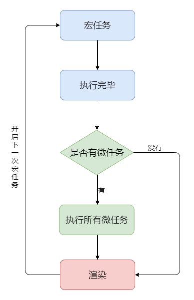

进程、线程、CPU
- cpu是计算机的核心，承担计算机所有的计算任务。
- 进程代表cpu能处理的单个任务，进程之间相互独立。
- 一个进程可以包括多个线程，多个线程共享进程资源。
进程、线程、CPU之间的关系
- CPU相当于一个工厂，进程就是工厂里面的不同车间，线程就相当于每个车间里面的工人。
- 单线程和多线程，就是指的一个进程内的单和多。
- 比如浏览器是多进程的，每一个tab页就是一个独立的子进程。
浏览器渲染进程
浏览器有很多进程，比如主进程，插件进程，GPU进程等，而跟前端关系最大的就是渲染进程(浏览器内核)。
渲染进程是多线程的
- GUI渲染进程:负责渲染页面，布局和绘制。
- js引擎线程:负责处理和解析js脚本程序。
- 事件触发线程:用来控制事件(鼠标点击，计时器等)。
- 定时器出发进程:用来定时器计时用的。
- http请求线程:单独处理ajax请求的线程。
GUI渲染线程和js引擎线程是互斥的，防止渲染结果不可预期。
JS是单线程的
- JS是单线程的，JS是通过事件队列(Event Loop)的方式来实现异步回调的。
event loop(事件队列)
因为js单线程，所以没有真正意义的异步，js的异步是通过事件队列来实现的。
- 事件触发线程管理一个任务队列，异步任务触发条件达成，将回调事件放到任务队列中
- 执行栈中所有同步任务执行完毕，此时JS引擎线程空闲，系统会读取任务队列，将可运行的异步任务回调事件添加到执行栈中，开始执行
let timerCallback = function() { console.log('wait one second'); }; let httpCallback = function() { console.log('get server data success'); }
// 同步任务
console.log(‘hello’);
// 同步任务
// 通知定时器线程 1s 后将 timerCallback 交由事件触发线程处理
// 1s 后事件触发线程将 timerCallback 加入到事件队列中
setTimeout(timerCallback,1000);
// 同步任务
// 通知异步http请求线程发送网络请求，请求成功后将 httpCallback 交由事件触发线程处理
// 请求成功后事件触发线程将 httpCallback 加入到事件队列中
$.get(‘www.xxxx.com',httpCallback);
// 同步任务
console.log(‘world’);
//…
// 所有同步任务执行完后
// 询问事件触发线程在事件事件队列中是否有需要执行的回调函数
// 如果没有，一直询问，直到有为止
// 如果有，将回调事件加入执行栈中，开始执行回调代码
- JS引擎线程只执行执行栈中的事件
- 执行栈中的代码执行完毕，就会读取事件队列中的事件
- 事件队列中的回调事件，是由各自线程插入到事件队列中的
- 如此循环
### 宏任务、微任务
> - 我们可以将每次执行栈执行的代码当做是一个宏任务（包括每次从事件队列中获取一个事件回调并放到执行栈中执行）， 每一个宏任务会从头到尾执行完毕，不会执行其他。
> - JS引擎线程和GUI渲染线程是互斥的关系，浏览器为了能够使宏任务和DOM任务有序的进行，会在一个宏任务执行结果后，在下一个宏任务执行前，GUI渲染线程开始工作，对页面进行渲染。
```javascript
// 宏任务-->渲染-->宏任务-->渲染-->渲染．．．
- 宏任务结束后，会执行渲染，然后执行下一个宏任务， 而微任务可以理解成在当前宏任务执行后立即执行的任务。
- 当宏任务执行完，会在渲染前，将执行期间所产生的所有微任务都执行完。
例:document.body.style = 'background:blue' console.log(1); Promise.resolve().then(()=>{ console.log(2); document.body.style = 'background:black' }); console.log(3);
总结
- 执行一个宏任务（栈中没有就从事件队列中获取）
- 执行过程中如果遇到微任务，就将它添加到微任务的任务队列中
- 宏任务执行完毕后，立即执行当前微任务队列中的所有微任务（依次执行）
- 当前宏任务执行完毕，开始检查渲染，然后GUI线程接管渲染
- 渲染完毕后，JS线程继续接管，开始下一个宏任务（从事件队列中获取）
